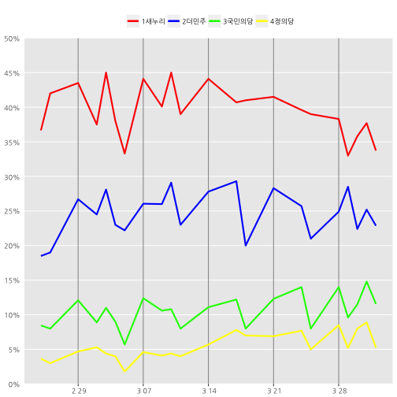

데이터 과학자가 바라본 20대 총선
여론조사 지지율
여론조사 지지율
여론조사 데이터는 대한민국 제20대 국회의원 선거 여론조사 데이터를 사용하여 정당별 여론조사 추이를 살펴본다.
| 기관 | year | month | day | 새누리당 | 더민주당 | 국민의당 | 정의당 | 기타·무응답 |
|---|---|---|---|---|---|---|---|---|
| 한국리서치[12] | 2016년 | 02월 | 25일 | 31.3 | 10.6 | 4.9 | 1.4 | 51.8 |
| 리얼미터[13] | 2016년 | 02월 | 25일 | 42 | 26.4 | 12 | 5.9 | 13.7 |
| 한국갤럽[14] | 2016년 | 02월 | 26일 | 42 | 19 | 8 | 3 | 28 |
| 리얼미터[15] | 2016년 | 02월 | 29일 | 43.5 | 26.7 | 12.1 | 4.7 | 13 |
| ………… | …….. | ….. | …… | ….. | …… | ….. | …… | …… |
| 알앤써치[33] | 2016년 | 03월 | 30일 | 35.8 | 22.4 | 11.5 | 8 | 22.3 |
| 리얼미터[34] | 2016년 | 03월 | 31일 | 37.7 | 25.2 | 14.8 | 8.9 | 13.4 |
| R&R[35] | 2016년 | 04월 | 01일 | 33.3 | 24.9 | 10.9 | 5.1 | 25.8 |
| 한국리서치[36] | 2016년 | 04월 | 01일 | 30.9 | 22.7 | 11.8 | 5.7 | 29 |
| 한국갤럽[37] | 2016년 | 04월 | 01일 | 37 | 21 | 12 | 5 | 25 |
1. 엑셀파일 가져오기
위키 웹페이지에서 가져온 데이터를 친숙한 스프레드쉬트 프로그램 엑셀로 가져온다. readxl 팩키지에 포함된 read_excel 함수를 사용해서 엑셀 파일을 열고, 각 필드마다 정의된 데이터형을 사전에 정의해서 데이터를 불러오고, 데이터프레임 칼럼명을 부여한다.
#================================================================
# 1. 데이터 가져오기
#================================================================
txt_type <- c(rep('text',4),rep('numeric', 5))
polls.rd <- read_excel("data/party_polls.xlsx", sheet='Sheet2', col_type=txt_type)
polls.rdSource: local data frame [26 x 9]
기관 year month day 새누리당 더불어민주당 국민의당
(chr) (chr) (chr) (chr) (dbl) (dbl) (dbl)
1 한국리서치[12] 2016년 02월 25일 31.3 10.6 4.9
2 리얼미터[13] 2016년 02월 25일 42.0 26.4 12.0
3 한국갤럽[14] 2016년 02월 26일 42.0 19.0 8.0
4 리얼미터[15] 2016년 02월 29일 43.5 26.7 12.1
5 알앤써치[16] 2016년 03월 02일 37.5 24.5 8.9
6 리얼미터[17] 2016년 03월 03일 45.0 28.1 11.0
7 한국갤럽[18] 2016년 03월 04일 38.0 23.0 9.0
8 미디어리서치[19] 2016년 03월 05일 33.3 22.2 5.7
9 조원씨앤아이[20] 2016년 03월 07일 44.5 24.1 13.3
10 리얼미터[21] 2016년 03월 07일 43.7 28.0 11.5
.. ... ... ... ... ... ... ...
정의당 기타·무응답
(dbl) (dbl)
1 1.4 51.8
2 5.9 13.7
3 3.0 28.0
4 4.7 13.0
5 5.3 23.8
6 4.4 11.5
7 4.0 26.0
8 1.8 37.0
9 4.7 13.4
10 4.5 12.3
.. ... ...
colnames(polls.rd) <- c("firm","year","month", "day","giho1","giho2","giho3","giho4","etc")2. 데이터 변환
정당별 지지율 데이터 시각화를 위해서 데이터를 정제한다. 우선, str_replace 함수를 사용해서 불필요한 값을 정리하고, 정규표현식을 사용해서 여론조사 기관 정보를 뽑아내고, lubridate 팩키지 ymd 함수를 사용해서 날짜데이터로 변환하고, 마지막으로 필요한 필드만 뽑아내서 polls.rd에 재저장한다.
polls.avg 데이터프레임을 생성하여 여러 여론조사기관에서 수행한 정당별 지지율 정보를 평균낸다. 그리고, 중복된 정보를 filter 명령어로 제거한다.
#================================================================
# 2. 데이터 변환
#================================================================
polls.rd <- polls.rd %>%
mutate(year=str_replace(year,"년","")) %>%
mutate(month=str_replace(month,"월","")) %>%
mutate(day=str_replace(day,"일","")) %>%
mutate(firm=str_extract(firm, '[:alnum:]+')) %>%
mutate(date = ymd(paste(year,month,day))) %>%
select(date, giho1, giho2, giho3, giho4, etc, firm)
polls.avg <- polls.rd %>% group_by(date) %>%
mutate(giho1 = mean(giho1), giho2=mean(giho2), giho3=mean(giho3), giho4=mean(giho4), etc=mean(etc)) %>%
select(date, giho1, giho2, giho3, giho4, etc) %>% filter(row_number(date) == 1)3. 데이터 시각화
ggplot2 팩키지를 활용하여 정당별 지지율 정보를 시각화한다.
#================================================================
# 3. 데이터 시각화
#================================================================
# 꺾은선 그래프
par(family='Unbatang')
percent_sign <- function (x) { paste0(x, "%") }
ggplot() +
geom_line(data=polls.avg, aes(x = date, y = giho1, color="1새누리"), size=1) +
geom_line(data=polls.avg, aes(x = date, y = giho2, color="2더민주"), size=1) +
geom_line(data=polls.avg, aes(x = date, y = giho3, color="3국민의당"), size=1) +
geom_line(data=polls.avg, aes(x = date, y = giho4, color="4정의당"), size=1) +
labs(x = NULL, y = "지지율(%)") +
scale_y_continuous(breaks = seq(0, 50, 5), limits = c(0, 50),
expand = c(0, 0), labels = percent_sign) +
scale_color_manual(values = c("1새누리" = "red", "2더민주" = "blue",
"3국민의당" = "green", "4정의당" = "yellow")) +
#scale_x_date(date_labels = "%b %d", breaks='1 week') +
theme(panel.grid.major.x = element_line(colour = "grey60"),
panel.grid.minor = element_blank(),
plot.title = element_text(size = rel(1.2), face = "bold"),
axis.title = element_blank(),
axis.ticks.y = element_blank(),
legend.position = "top",
legend.title = element_blank()) 